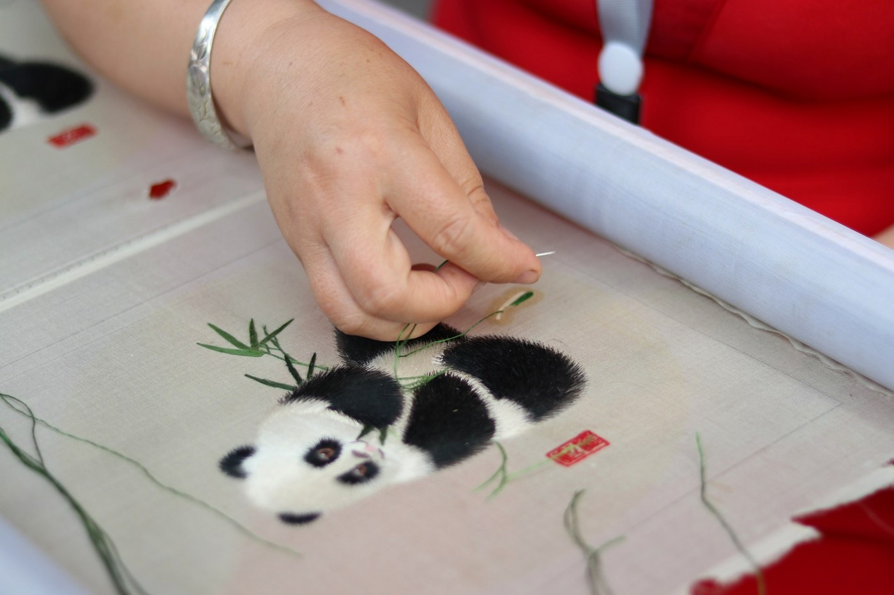
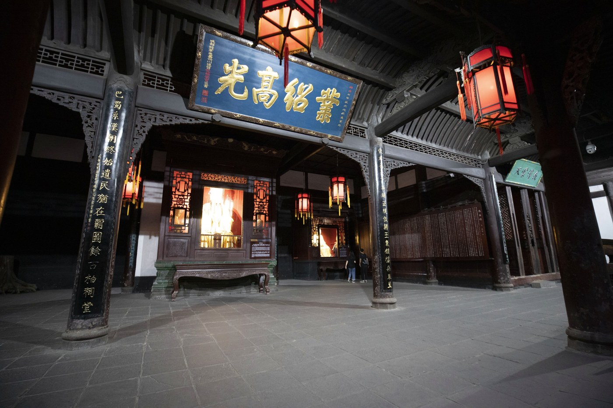

01
川剧 · 变脸
SICHUAN OPERA · FACE CHANGING
一抬手，一转身，脸谱在火光中瞬息万变。川剧把巴蜀人的幽默、热烈与想象力，都藏在一声高腔里。变脸、吐火、滚灯，是技巧，也是成都人表达情绪的方式。
变脸
吐火
高腔
03 / CULTURE OF CHENGDU
川剧的高腔、蜀绣的丝线、茶馆的盖碗、三国祠庙的红墙——成都的文化，活在日常里。
蜀地风雅 / SHU CULTURE
“九天开出一成都，
万户千门入画图。”
李白《上皇西巡南京歌》
SICHUAN OPERA · FACE CHANGING
一抬手，一转身，脸谱在火光中瞬息万变。川剧把巴蜀人的幽默、热烈与想象力，都藏在一声高腔里。变脸、吐火、滚灯，是技巧，也是成都人表达情绪的方式。

SHU EMBROIDERY · SILK THREAD
作为中国四大名绣之一，蜀绣以针脚平齐、线片光亮著称。熊猫、芙蓉、鲤鱼，在丝线上获得呼吸。一幅双面绣，正反两面皆是风景，也皆是耐心。

TEAHOUSE · SLOW LIVING
竹椅、方桌、盖碗茶。人民公园的鹤鸣茶社里，掺茶师傅的长嘴壶划出弧线，时间也跟着慢下来。聊天、看报、采耳、发呆，茶馆是成都人的第二客厅。

THREE KINGDOMS · MEMORY
武侯祠的香火延续千年。刘备与诸葛亮的故事，在碑刻、楹联与红墙夹道之间，被一遍遍讲述。历史在这里不是课本上的年份，而是可以走进的光影。
非遗名录 / HERITAGE
它们不只是展柜里的过去，也在年轻人的手中继续被使用、被改写、被带向更远的地方。
两千余年历史的丝织工艺，色彩华美，被誉为“寸锦寸金”。
针法严谨、线片光亮，与苏绣、湘绣、粤绣并称四大名绣。
以天然生漆为材，髹饰繁复，温润含蓄，是时间的艺术。
以细如发丝的银线掐制成型，精巧繁复，光泽如月。
竹丝依瓷胎而编，薄如蝉翼，是竹与瓷的相遇。
融合昆、高、胡、弹、灯五种声腔，变脸与吐火名扬四海。
把旅程排进日历 / PLAN